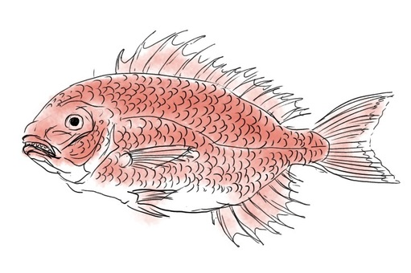

El taiyaki es un pastel japonés que tiene forma de pez y tradicionalmente está relleno con pasta de judías rojas azuki, aunque a día de hoy puedes encontrarlo de infinitos rellenos distintos. Tiene una textura similar a la de un Waffle y también se prepara de forma parecida, cocinando la masa en moldes metálicos que se cierran sobre sí mismos y que, al abrirlos, dan lugar a este pequeño manjar japonés.
Su nombre proviene de la palabra Tai (besugo) y yaki (asado), lo que le da su particular forma de pez.
En Nekoyaki pensamos en hacer este delicioso platillo japonés,
con la apariencia de lindos gatitos, de ahí la palabra neko.
Estos pasteles se tomaban solo en ocasiones especiales. Su textura esponjosa y delicado relleno elaborado con pasta de azuki de la mejor calidad, estaba solo destinado a aquellas personas que podían permitirse pagar el elevado precio de esta exquisitez. Debido a su delicioso sabor, y al tamaño de la ración perfecta para llevar, este pastel se extendió rápidamente por todo el país. Al principio solo para tomar en días especiales, para después pasar a ser un dulce que se encuentra en todas partes, ya que a los jóvenes japoneses, y sobre todo a los turistas, llama muchísimo la atención.
¿A qué viene esa forma de pez que tiene el taiyaki? Desde la antiguedad, los japoneses solía reservar la degustación del pez tai en ocasiones especiales.
Este pez relacionado con la realeza y las clases altas de la sociedad japonesa es sinónimo de buena suerte.
El nombre que recibe el besugo rojo en Japón también tiene que ver con la suerte que se le otorga a este animal. En una celebración siempre se usa la expresión ‘medetai’ que suena igual que ‘tai’.
Con el paso del tiempo se fue adquiriendo la costumbre de tomar pez tai en las celebraciones, y siglos después, añadir el postre con la misma forma para disfrutar de buena suerte en una población que es sumamente supersticiosa.